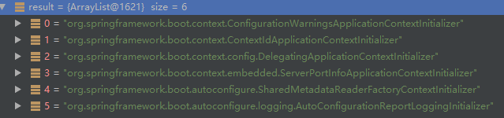
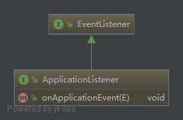
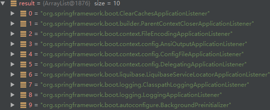
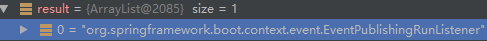
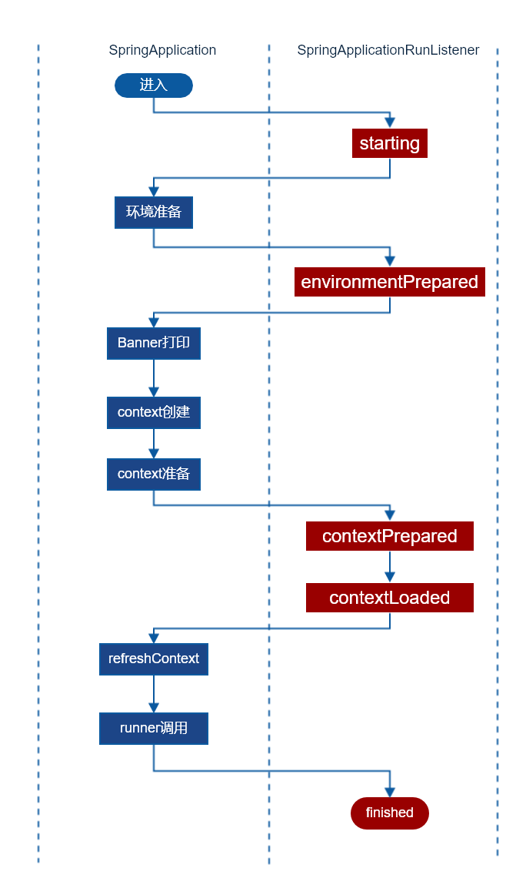
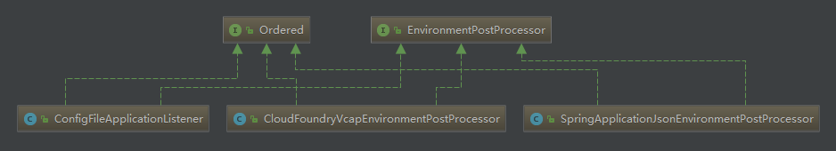

spring-boot
本文最后更新于：2023年8月9日 上午
SpringApplication
启动程序首先初始化了一个SpringApplication对象。来看一看在它的构造器里发生了什么。
1 | |
initialize方法:
1 | |
web环境检测
deduceWebEnvironment方法用于检测当前是否是web工程环境，检测的标准也很简单，classpath中必须同时存在下面这两个类:
- javax.servlet.Servlet
- org.springframework.web.context.ConfigurableWebApplicationContext
ApplicationContextInitializer
下一步便是检测应当使用哪些ApplicationContextInitializer，这货并不是spring-boot的专属，而是定义在context下，这东西是在喜闻乐见的refesh方法执行之前留给我们进行自定义初始化的钩子。典型的使用的场景是注册我们自己的属性来源、设置激活的profile。
在简单的web应用场景下(没有数据库/mybatis)，共最终引入了下列的类:

来自于三个jar包:
- spring-boot
- spring-boot-autoconfigure
- spring-beans
ApplicationListener
这货是典型的观察者模式实现，类图:

在简单的web应用场景下，系统共初始化了这些监听器:

SpringApplicationRunListener
就像它长得那样，就是用来监听SpringApplication的run方法的监听器。看看这货用到了哪些实现类:

run
从这一节开始，就进入了SpringApplication的run方法的势力范围。整个方法的流程总结如下图:

starting
SpringApplicationRunListener其实起一个广播器的作用，将消息广播给ApplicationListener一节初始化的10个Listener中的某几个。
debug可以发现，对启动事件感兴趣的只有LoggingApplicationListener一个。
当LoggingApplicationListener监听到启动事件时，所作的主要工作便是决定采用哪一个日志框架，其判断逻辑如下:
如果系统变量
org.springframework.boot.logging.LoggingSystem存在，那么由其决定。依次检测classpath中这些类是否存在:
1
2
3ch.qos.logback.core.Appender;
org.apache.logging.log4j.core.impl.Log4jContextFactory;
java.util.logging.LogManager;
环境准备
相关源码:
1 | |
Spring里面的Environment到底是个什么东西，详细参考隔壁(Spring.md)Environment接口一节，总结来说，这货就是属性配置来源(比如系统变量)和profile的综合体。
属性来源
在web环境下共初始化了以下4个属性来源:
- System.getProperties()
- System.getenv()
- servlet-context-init-params
- servlet-config-init-params
有意思的问题：此时servlet-context-init-params和servlet-config-init-params实际上是一个占位符，无法从这两个来源获得任何真实的属性，等到refresh方法执行时才会被真实的来源替换。
profile配置
SpringApplication.configureProfiles方法:
1 | |
active profile取自上一节中的属性来源，key为spring.profiles.active.
environmentPrepared
配置文件加载
监听器ConfigFileApplicationListener负责spring-boot配置文件的加载，ConfigFileApplicationListener默认会从以下的位置搜索配置文件:
- classpath下的application.properties或application.yml
- file:./下的application.properties或application.yml
- classpath:config目录下的application.properties或application.yml
- file:./config目录下的application.properties或application.yml
此监听器是如何加载的?源码:
1 | |
显然核心的加载操作是通过EnvironmentPostProcessor接口实现的，此接口允许我们在context刷新之前自定义配置加载，并且Spring推荐此接口的实现类同时实现Ordered接口。类图:

加上ConfigFileApplicationListener自己，spring-boot默认共初始化了三个加载器，其它两个是SpringApplicationJsonEnvironmentPostProcessor和CloudFoundryVcapEnvironmentPostProcessor，下面按照其优先级顺序进行说明。
SpringApplicationJsonEnvironmentPostProcessor
尝试读取spring.application.json或SPRING_APPLICATION_JSON系统指定的json配置文件，从这里加载的配置具有最高的优先级，当然，默认是没有的。
CloudFoundryVcapEnvironmentPostProcessor
从Cloud Foundry加载配置，这是什么东西问度娘。
ConfigFileApplicationListener
这里就是加载配置文件加载一节所说的配置文件的过程。